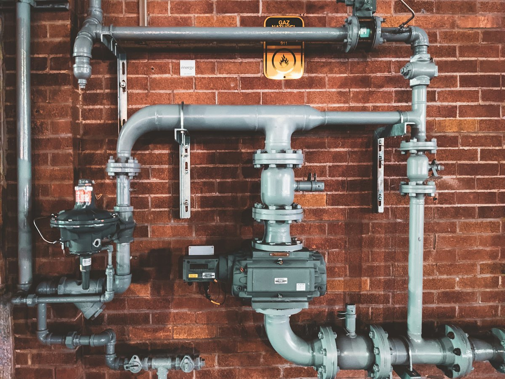
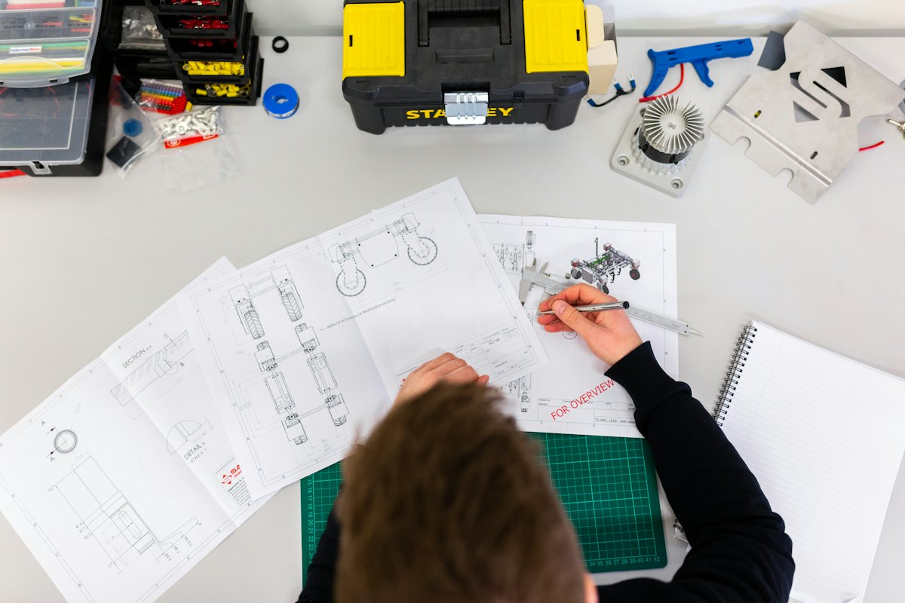

Módulo técnico // Prevención técnica
Evita la emergencia:
mantenimiento programado
Muchas inundaciones y cortos severos se previenen con una revisión técnica a tiempo. Agenda una visita preventiva y revisamos tu instalación antes de que falle.
Evidencia de taller
Lo que revisamos en cada visita
Diagnóstico exhaustivo y refacciones de cobre, CPVC o cableado en sitio.


Imágenes de referencia del oficio (muestras).
4 protocolos de mantenimiento
Elige tu protocolo
Lavado y desinfección de tinacos y cisternas
Eliminación de sedimentos y sarro mineral característico del agua de Pachuca.
- Extracción mecánica de lodos y sedimentos densos.
- Cepillado con producto neutro grado alimenticio.
- Revisión de flotador, varilla y pichancha de retención.
Reparación de humedades y filtraciones ocultas
Detección puntual del punto de fuga sin demoler muros innecesariamente en casas y departamentos.
- Detección auditiva y térmica no invasiva.
- Prueba hidrostática por secciones de ramal.
- Sellado definitivo mediante termofusión o cobre rígido.
Instalación y armado de cocinas integrales
Conexión segura de combustible, hidráulica sanitaria y circuitos reforzados de alta potencia.
- Líneas seguras de gas con válvula de corte.
- Fijación de monomandos, contracanastas y cespoles.
- Contactos con protección diferencial para electrodomésticos y parrillas.
Limpieza de redes hidrosanitarias y registros
Mantenimiento de tuberías principales para evitar malos olores y taponamientos en la descarga domiciliaria.
- Desazolve preventivo con sonda flexible de acero templado.
- Inspección de pendiente y nivel de escurrimiento.
- Sellado hermético de tapas para inhibir fauna nociva.
Agendar visita preventiva
Llena los datos para calcular costo y turno de la unidad móvil en Pachuca. Al tocar el botón se abrirá WhatsApp con el reporte precargado: adjunta 1 o 2 fotos del área para valorar el trabajo.
Compromiso técnico Hernández: “Manda la foto, te cotizamos antes de ir. Cero sorpresas ni cargos ocultos.”
Pago únicamente en efectivo en sitio al culminar y verificar la prueba técnica. Herramienta especializada, refacciones de grado comercial y mano de obra garantizada.